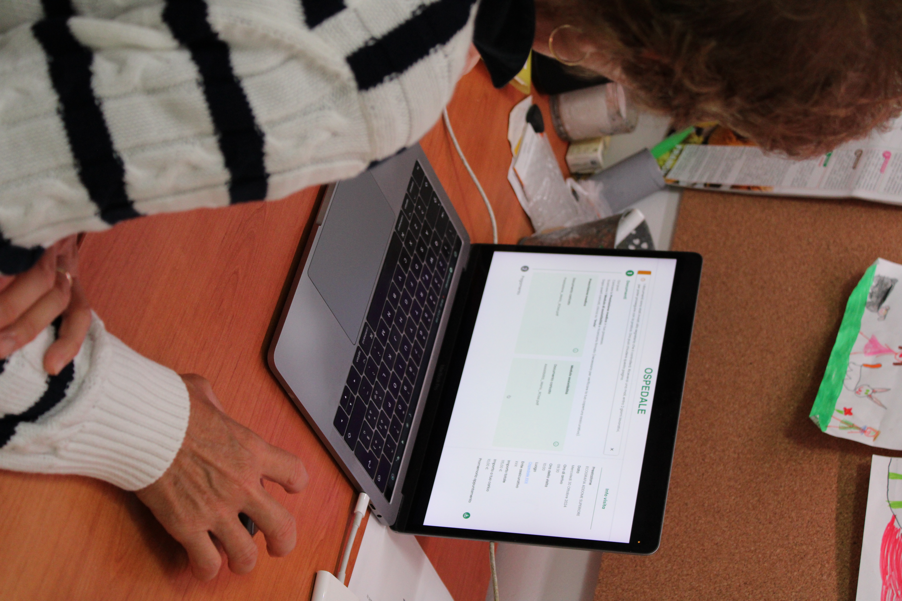

Designing for comparison
Transforming healthcare digital services through strategic UX consultancy, rigorous research, advanced requirement engineering, and data-driven redesign validation.
Context & Quantitative Data Analysis
Commissioned via high-level strategic consultancy for a primary IT solutions leader operating within the Genoa technology hub on behalf of a major private healthcare provider, the Self Accettazione service was engineered to streamline patient check-in procedures and mitigate queue congestion. Within this platform, the document upload and digital payment processing represent the two core operational steps governing the entire user interaction. To evaluate real-world performance, I applied quantitative data analysis methodologies to examine an extensive dataset of 172,130 interactions recorded between July 2021 and November 2023.
Through demographic segmentation, I mapped active users ranging from infants (managed via legal guardians or caregivers) up to 104 years of age, identifying an engagement peak centered around the 54-year mark, with core activity concentrated between 46 and 65 years. Critically, my metric evaluation exposed severe business leakage directly impacting the two main interaction steps: only 8.75% of users successfully uploaded required documentation, and a mere 4.42% completed digital payments. This highlighted my capacity to unearth systemic friction points using empirical data as a foundation for strategic intervention.
Technical Insights: Qualitative Developer Interview
In my capacity as a strategic consultant, to investigate infrastructural bottlenecks and requirement ambiguity, I designed and conducted a semi-structured qualitative interview with the developer responsible for the legacy build. Leveraging my expertise in qualitative research methodologies, I directed the discussion toward analyzing development workflows, technical constraints, and organizational misalignments.
The interview revealed how severe time constraints, informal textual briefs lacking clear interface guidelines, and a general lack of digital standardization compromised baseline product standards. By extracting these insights, I demonstrated my ability to bridge technical execution and business strategy, illustrating how the absence of upstream strategic consultancy incurs substantial long-term technical debt.
Heuristic Evaluation & Redesign Process
In collaboration with project stakeholders, I conducted a comprehensive expert qualitative evaluation based on established usability standards. This critical audit uncovered severe interface vulnerabilities and the absence of essential safeguards, such as confirmation receipts or clear instructions for facility access. My analysis accurately captured the root causes of user anxiety during testing, evidenced by symptomatic expressions such as 'Am I done?' or 'I don't know what to do.'
Deploying my advanced competencies in strategic consultancy, user experience design, information architecture, and UI prototyping (Adobe Suite), I spearheaded a radical and comprehensive redesign process. I restructured the entire user journey to maximize clarity, transparency, and emotional reassurance, while strategically isolating unmodifiable external constraints (such as external payment gateway limitations).
A/B Testing & User Validation
To empirically validate the outcomes of my strategic consultancy and redesign, I planned, facilitated, and executed a rigorous comparative A/B test with 30 diverse participants, meticulously balanced across gender and age cohorts (20–40, 40–50, and 50–60 years). To ensure absolute scientific validity, I alternated interface presentation order to eliminate learning-curve bias and video-recorded sessions for granular behavioral analysis.
Following testing, I administered a comprehensive 7-dimensional satisfaction survey. My structured evaluation framework measured emotional engagement, findability, content accessibility, service efficiency, reliability, and learnability, translating qualitative user feedback into actionable, concrete metrics.

Quantitative evaluation of the redesign
Analysis of user feedback collected across the seven dimensions of the comparative test, comparing the legacy interface against my strategic redesign.
Reading Note
In the following charts, Interface 1 refers to the original legacy version of the service, while Interface 2 represents my proposed redesign.
Impact & Strategic Value
My research findings demonstrated an overwhelming user preference for the redesigned interface, validating how my user-centered design methodologies and strategic consultancy successfully eliminate ambiguity, reduce task abandonment, and restore user trust, specifically streamlining the critical steps of document uploading and payment processing.
Acknowledging the concrete business value of my strategic counsel and design excellence, corporate partners integrated multidisciplinary frameworks into their core development pipelines. This project serves as a testament to my core professional competencies: uniting strategic consultancy, deep analytical research, structured redesign execution, and cross-functional facilitation to drive measurable business growth and optimized product development.